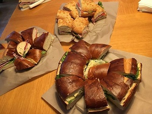
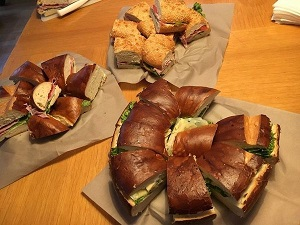

Infrastructure as a Meetup
We are Testers, SysAdmins, DBAs, Ops, DevOps, Manager, Devs,... who meet every 3 months to discuss DevOps things. We adore talking about growing a culture as a base for a DevOps mindset. And of course, we love to talk about technical stuff like Containers, Docker, Ansible, Salt, Linux, Continuous Deployment, Continuous Delivery, Kubernetes,...
IaaM Manifesto
Discussion over MonologueCoding over Presentation
Being focused over growth
Being nice over being not nice
Next Meetup
2017-09-27T18:00:00+02:00 @ factory300 my_location
NO AGENDA - We'll try an Un-Meetup
You have a technical problem related to our focus?
You solved a problem in our domain?
You gained experience in a topic of our interest?
You figured out how to explain DevOps in less than 20 words?
Please share your knowledge with us.
How it works
Prepare your talk / discussion. It can last 15 minutes, 30 minutes or 45 minutes.
At the beginning we will do a voting and decide our agenda.
The following topics are currently on the table:
Help needed - show me your best practices to organize Ansible projects
Playing around with Minikube and Kubernetes
Visualize the pain with Prometheus
Docker multi-stage builds
Done Meetups
2017-06-28T18:00:00+02:00 @ Smarter Ecommerce my_location
My Docker journey - Thomas EinwallerContinuous Delivery with GitLab and Docker - Matthias Braun
DevOps Questionnaire - Hubert Ströbitzer
Unikernels - Johann Hubert Sonntagbauer
 



made with love by an engineer without any UI skills